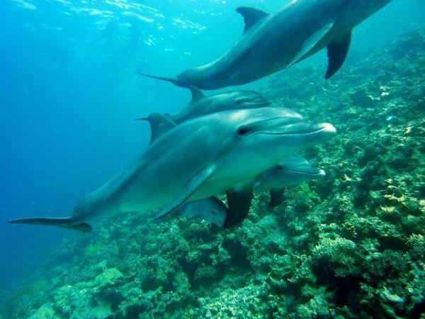
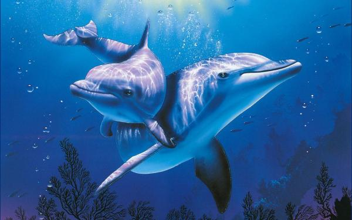
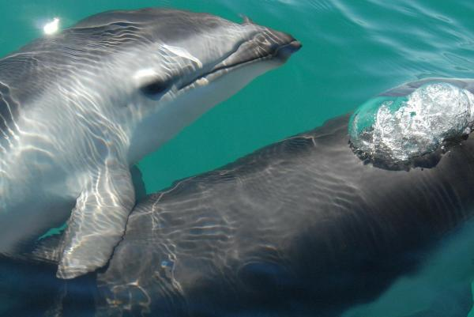
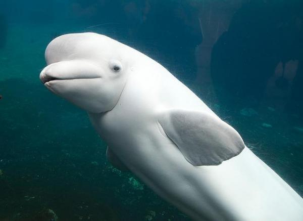
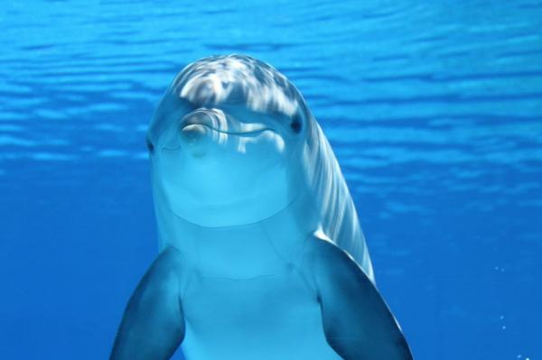

Les dauphins comptent parmi les créatures du règne animal les plus populaires, charismatiques et intelligentes. Avec leur expression toujours souriante, ils sont un symbole de joie et de liberté. Les dauphins transmettent des sensations positives... Comment oublier le célèbre Flipper, un dauphin qui semblait être très heureux. Il existe plus de 30 espèces de dauphins naviguant dans les océans et fleuves de la terre. Ils sont considérés comme les chiens de la mer pour être très sympathiques et avoir de bonnes relations avec les êtres humains.
Mais ceci n'est que le sommet de l'iceberg, nos animaux marins préférés sont des créatures très intéressantes et complexes. Il existe probablement beaucoup de choses que vous ignorez sur eux.
Les dauphins sont parents des baleines et, de la même manière, des orques. En réalité, les baleines sont un type de dauphin, étant donné que les deux espèces font partie de la famille des cétacés.
Ils sont très sociaux les uns avec les autres et aiment chasser, jouer et nager ensemble. Les grands groupes de dauphins peuvent être formés de jusqu'à 1000 spécimens. Imaginez être sur un bateau et observer un tel nombre de dauphins à la fois. Un vrai spectacle ! Bien que ce chiffre puisse paraître important et faire penser qu'il existe un grand nombre de dauphins, le fait est que certaines espèces sont en danger critique d'extinction, comme le dauphin rose de l'Amazone.
L'espèce des grands dauphins ou « dauphins à gros nez » sont des particulièrement intelligents. Pour chasser et creuser dans les fonds marins et dans les rochers, ils n'utilisent pas leur gueule ou leur nez afin d?éviter de se blesser. Au lieu de cela, ils s'apprennent entre eux à utiliser les matériaux qu'ils rencontrent en nageant.
Une autre des curiosités les plus frappantes sur les dauphins est qu'ils sont considérés comme encore plus intelligents et évolués que les singes. Leur cerveau est incroyablement similaire au cerveau d'un être humain.
Selon les espèces, la gestation d'un dauphin peut durer jusqu'à 17 mois. Les mères dauphins sont souvent très affectueuses, expressives et protectrices, et elles ne se séparent jamais de leurs petits.

En ce qui concerne les sens, les dauphins peuvent voir presque parfaitement à la fois dans et hors de l'eau, ils ont un excellent sens du toucher, et bien qu'ils n'aient pas le sens de l'odorat, leur ouïe le compense largement.
Ces animaux marins peuvent entendre des fréquences 10 fois plus élevées que la limite pour un être humain adulte.
Les dauphins ont parcouru un long chemin pour arriver là où ils sont. Ils descendent de mammifères terrestres qui retournèrent dans les eaux il y a plus de 50 millions d'années. La plus intéressant est que d'autres animaux descendant des mêmes mammifères terrestres ont évolué différemment, tels que les girafes et les hippopotames. Au final, tous les animaux sont parents.
Les dauphins sentent et souffrent de façon très semblable aux êtres humains. Ils ressentent la douleur et peuvent être sujets au stress. Il a été découvert que les dauphins sont conscients de leur propre mortalité, ce qui signifie qu'ils savent qu'ils quitteront cette terre à un moment donné. C'est pourquoi certains préfèrent rester maîtres de leur destin et se suicider. Ainsi, une autre des curiosités sur les dauphins les plus choquantes est que, avec l'homme, ce sont les seuls animaux capables de se suicider. Les formes les plus courantes de suicide chez les dauphins sont de se heurter soudainement contre quelque chose, d'arrêter de se nourrir et de respirer.
Pour communiquer, ils utilisent une méthode très développée et complexe appelée « écholocation ». Cette méthode fonctionne pour naviguer sur de longues distances et pendant très longtemps, envoyer des signaux afin de trouver des proies, éviter les obstacles et les prédateurs. Comment ça marche ? Cela consiste en l'émission par le dauphin d'une gamme de sons sous forme de rafales d'impulsions sonores qui aident à ce qu'un ou plusieurs autres dauphins puissent analyser l'environnement à mesure qu'arrive l'écho. Le son est capté par les dents de la mâchoire inférieure qui absorbent les vibrations sonores.
Enfin, il faut souligner qu'en plus d'être des animaux très intelligents, ils sont aussi très sensibles à la souffrance d'un autre dauphin. Si un dauphin est en train de mourir, d'autres viendront le secourir et le soutenir. Ils l'emmèneront tous ensembles vers un endroit au-dessus du niveau de l'eau où il puisse respirer à travers le trou au sommet de sa tête connu sous le nom d« évent ».
